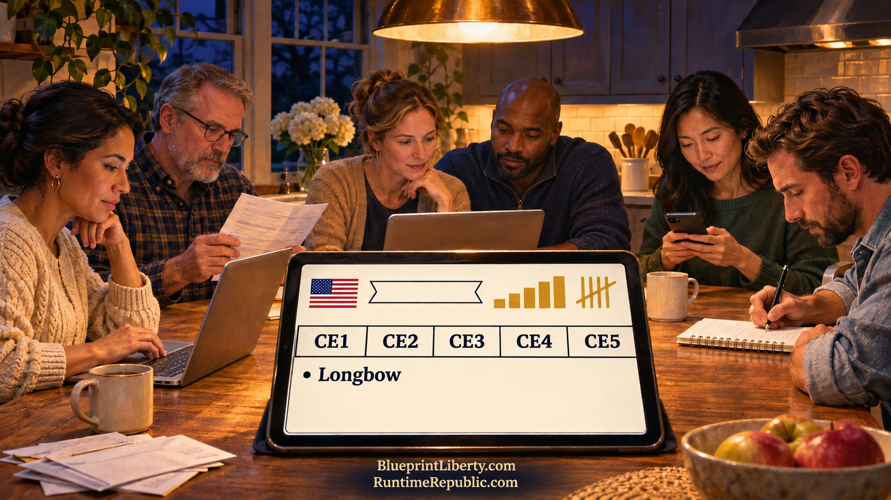

← Join the challenge · Bring your group · Teams
Essay · about 3 minutes · Draft under review

Your group already does the hard part. You show up. You call your representatives, fill the hearing rooms, and keep the conversation going when everyone else has moved on. But be honest: how often do you measure whether any of it worked?
That's the gap the Lean Civics Challenge closes. And it's why your group should join as an org-level team.
The challenge starts at home. For five weeks, every member tracks their household budget and traces where each tax dollar goes. Income tax, payroll tax, property tax, sales tax, every fee. Most people have never seen it laid out. When they do, the same thing usually stands out: under today's system, the family budget isn't first in line. Government gets paid before the family does. Once members see that in their own numbers, they stop arguing in the abstract and start working from what's in front of them.
Then you log the gaps against three frameworks. Moneyball asks what the numbers actually say. The British Bicycle Team asks what small improvement you can make this week, because marginal gains add up. The Close Encounters scale, CE1 through CE5, measures how close you're getting to the people who write the rules. At CE1 you're noticing the problem. At CE5, citizens and elected officials are writing a bill together, in the open, on GitHub.
Why join as a team instead of a few individuals? Because one person's budget is a story, and a team's budgets are data. When your group joins, you get a shared dashboard. It shows team totals on top, each member below, and CE levels across the columns. Members pick call signs, like fighter pilots, so the public version shows the work without exposing anyone's private finances. Your group's name sits next to the American flag. Your members choose their state, county, and city flags. That's how a public board shows your group is doing the work and measuring it.
It also protects your group from its biggest threat, which is drift. Groups start strong and then fade. Meetings get longer, results get vaguer, and a few insiders end up running things. The challenge runs on Plan-Do-Check-Act. Every week you check, every month you adjust. When your progress is visible on a board, your group has a much harder time drifting.
Our motto says it plainly:
Politics is the art of associations. Liberty is the art of elite capture avoidance. Drift is the first enemy of Liberty.
Your group already has the association. The challenge gives it a scoreboard, a method, and a way to work in the open where nobody can capture it.
Start with five weeks and one budget per member. Put your group's name on the board, and see how far up the CE scale you can climb together.
Source text: Runtime-Republic-Training · CC BY 4.0